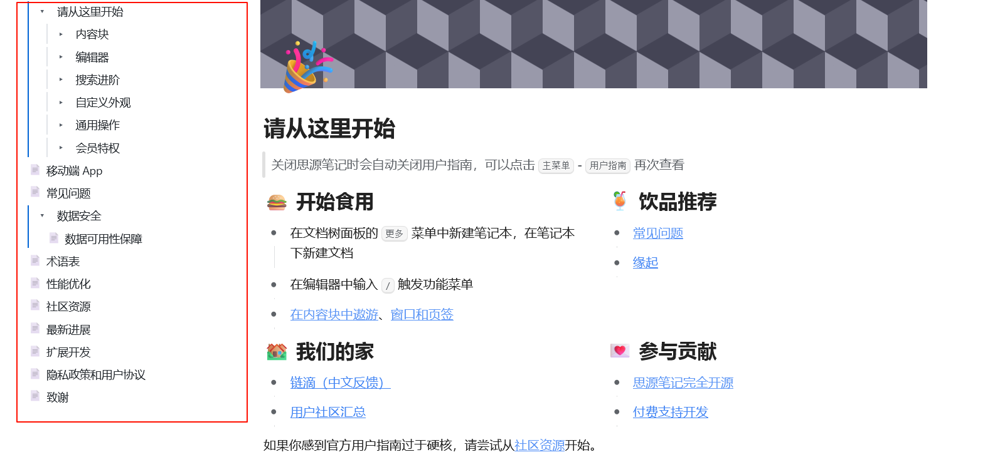

首页
v1.0.42 OceanPress支持侧边文档树目录导航
https://sy.heartstack.space/%E6%80%9D%E6%BA%90%E7%AC%94%E8%AE%B0%E7%94%A8%E6%88%B7%E6%8C%87%E5%8D%97/%E8%AF%B7%E4%BB%8E%E8%BF%99%E9%87%8C%E5%BC%80%E5%A7%8B.html

由于我的失误，导致之前版本的部署将会出现样式问题，请在将插件更新到此版本后重新部署一次
此版本是为了修正样式问题发布的，之后会增加选项可控制是否开启文档树，或者自定义侧边栏内容